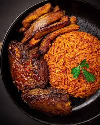
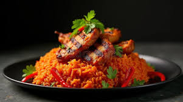
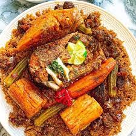

Nigeria 🇳🇬
Smoky Party Jollof
Known for its smoky flavor, rich tomato base, and delicious party-style preparation.
Compare iconic jollof styles from Nigeria, Ghana, and Senegal. Explore recipes, discover cultural facts, cast your vote, and join the conversation around West Africa's most famous rice dish.
Jollof rice is one of West Africa's most beloved dishes. Each country brings its own unique flavor, cooking style, and cultural identity to the meal. The famous "Jollof Wars" have inspired endless debates about which version tastes best.
Take a quick look at the three most famous styles of Jollof Rice.

Known for its smoky flavor, rich tomato base, and delicious party-style preparation.

Prepared with aromatic spices, vegetables, and long-grain rice for a rich and satisfying taste.

Often considered the origin of Jollof rice and traditionally served with fish and vegetables.
Jollof is more than food—it is a symbol of culture, celebration, and friendly rivalry across West Africa.
Loading fact...